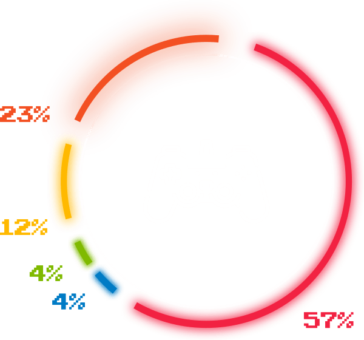

Una industria de auge
La industria de los videojuegos en Colombia está distribuida en: Bogotá (57%), Antioquía (23%), Cali (12%), Eje Cafetero (4%) y Bucaramanga (4%) según cifras de Procolombia.



Millones conectados en línea
En todo el mundo fue la cifra histórica marcada por la industria de los videojuegos. Se logró el 15 de marzo de 2020 durante el aislamiento.